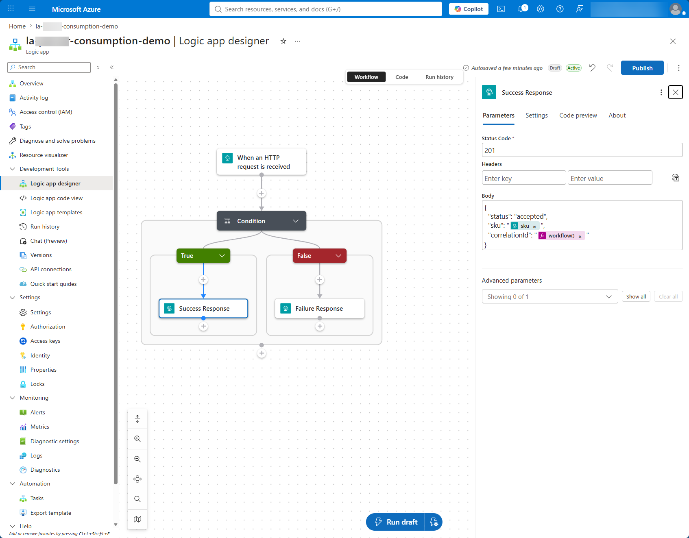

Scenario and Objectives
A catalog team needs a lightweight endpoint that accepts a product and rejects incomplete or invalid data before downstream processing begins.
- Create an HTTP-triggered Consumption workflow.
- Validate required product fields and price.
- Return either 201 Created or 400 Bad Request.
- Inspect inputs, outputs, and timing in run history.
Architecture
flowchart LR
C[API client] -->|POST product JSON| H[HTTP request trigger]
H --> V{Valid SKU, name, price?}
V -->|Yes| S[201 response]
V -->|No| B[400 response]
classDef azure fill:#e6f2fb,stroke:#0078d4,stroke-width:2,color:#0f1722;
classDef result fill:#e7f5e7,stroke:#107c10,stroke-width:2,color:#103010;
class C,H,V azure; class S,B result;Prerequisites and Names
- An Azure subscription with permission to create a resource group and Consumption logic app.
- A REST client such as the VS Code REST Client extension, PowerShell, or curl.
| Resource | Suggested name |
|---|---|
| Resource group | rg-logicapps-labs |
| Logic app | la-product-api-<suffix> |
| Workflow | The Consumption resource contains this single workflow. |
Security: the generated callback URL contains a shared access signature. Treat it as a secret and do not commit it to source control.
Build the Workflow
- In the Azure portal, create a Logic App (Consumption) in your lab resource group.
- Open the designer and choose the When an HTTP request is received trigger.
- Set the method to POST and paste the schema below into Request Body JSON Schema.
- Below the trigger, select + > Add an action, search for Condition, and add the Control Condition action. In its left Choose a value field, open Expression and enter the validation expression below. Set the operator to is equal to and the right value to the Boolean true.
- In the true branch, add a Response action with status code 201 and the success body.
- In the false branch, add a Response action with status code 400 and the error body.
- Wait until the designer reports that the draft was autosaved, then select Publish. After publishing succeeds, open the HTTP trigger and copy its HTTP POST URL.

Request schema
{
"type": "object",
"properties": {
"sku": { "type": "string" },
"name": { "type": "string" },
"price": { "type": "number" }
},
"required": ["sku", "name", "price"]
}
Condition expression
and(not(empty(triggerBody()?['sku'])), not(empty(triggerBody()?['name'])), greater(float(triggerBody()?['price']), 0))
Do not use Trigger conditions: the trigger settings shown in the screenshot control whether the workflow starts at all. This lab needs a separate Condition action so invalid requests still start the workflow and receive the HTTP 400 response.
Success body
{
"status": "accepted",
"sku": "@{triggerBody()?['sku']}",
"correlationId": "@{workflow()?['run']?['name']}"
}
Bad request body (HTTP 400)
{
"status": "rejected",
"message": "sku, name, and a positive price are required"
}
Draft versus published workflow: the designer autosaves your edits as a draft. Run draft is useful for an interactive check in the designer, but external callers use the published workflow. Select Publish before testing the callback URL from PowerShell or another REST client.
Test and Inspect
Test with Run draft
- Select Run draft in the designer.
- When the designer asks for the HTTP request body, paste the valid request below and run the workflow.
- Repeat with the invalid request to exercise the False branch and 400 response.
Valid request body (expects HTTP 201)
{
"sku": "AZ-100",
"name": "Workflow Mug",
"price": 18.50
}
Invalid request body (expects HTTP 400)
{
"sku": "AZ-101",
"name": "Invalid Product",
"price": 0
}
Test the published callback URL
After publishing the workflow, replace <callback-url> and run both requests. Keep the URL only in your local shell history or an untracked environment variable.
$url = '<callback-url>'
$valid = @{ sku='AZ-100'; name='Workflow Mug'; price=18.50 } | ConvertTo-Json
Invoke-RestMethod -Method Post -Uri $url -ContentType 'application/json' -Body $valid
$invalid = @{ sku='AZ-101'; name='Invalid Product'; price=0 } | ConvertTo-Json
try { Invoke-RestMethod -Method Post -Uri $url -ContentType 'application/json' -Body $invalid } catch { $_.Exception.Response.StatusCode.value__ }- The valid request returns HTTP 201, the SKU, and a correlation ID.
- The invalid request returns HTTP 400 and the validation message.
- Run history shows only the matching condition branch as executed.
Troubleshooting
| Symptom | Check |
|---|---|
| 404 or 401 response | Confirm the latest draft is published, then recopy the complete callback URL including its query string. |
| Condition fails unexpectedly | Open trigger inputs in run history and confirm JSON property names and content type. |
| Client waits indefinitely | Confirm both branches contain a Response action. |
Cleanup and References
Delete the lab resource group if you will not use it in later labs. Otherwise, disable the workflow and keep the callback URL private.
Microsoft Learn: Receive and respond to inbound HTTPS calls and Workflow triggers and actions.